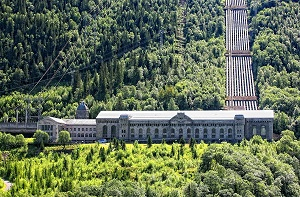

Vi tilbyr en rekke turer over hele Norge. Turene passer for alle aldere og alle former. Lokale guider er med på alle turene.
Det er en fantastisk mulighet til å oppleve flott norsk natur!
I sabotørenes fotspor

Vi tilbyr en guidet tur til Rjukan og Vemork kraftstasjon. Her får du historier fra planlegging, utførelsen og flukten til sabotørene.
Det er en 8 km løype som starter ved Rjukan Fjellstue. Turen går i varier skogs - og turterreng.
Det blir stopp underveis hvor guid forteller om sabotørene og deres oppdrag, og historier om flukten etter aksjonen .Turen ender på Vemork kraftstasjon og en tur innom museet der.
Turen opp til Norges høyeste fjell er majestetisk. Turen starter ved Juvasshytta som ligger 1850 meter over havet. Derifra er det en tur over breen før vi ankommer Galdhøpiggen på hele 2469 meter over havet. Turen er 15 km lang og vil ta fra 6 til 7 timer
Fra toppen får man en fantastisk utsikt over Jotunheimen. som er verdt hver høydemeter
Turen over Besseggen er en av Norges mest populære turer. Og det er ikke uten grunn. På turen får man en fantastisk naturopplevelse, man opplever norsknatur på sitt aller fineste. Turen gir også en god mestringsfølelse, og høydeskrekken får får prøvd seg.
Turen over besseggen går mellom Gjendesheim og Memurubu. . Turen er på 16 kilometer, og på det høyeste er du 1743 meter over havet. Turen tar rundt 8 timer.
{kind=link}